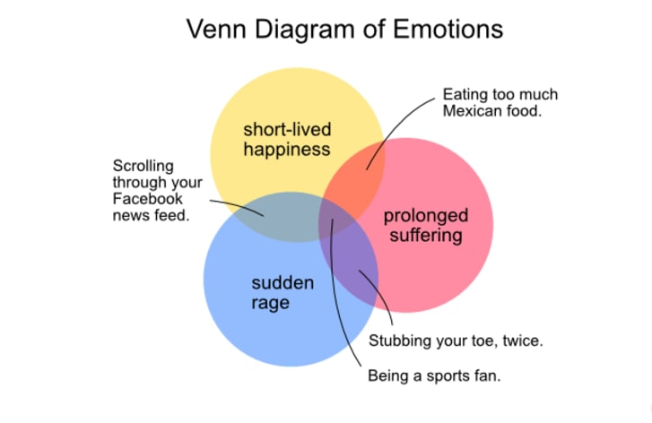

Accessibility Tutorial
By Buddy McCodeFace
A page to help explain HTML5 semantic markup.
The Document Outline - Sectioning Tags
HTML5 has new “sectioning content” elements will have an impact on the document outline. These tags all have a structural meaning and are block elements by default.
Headers
The <header> element is a sectioning tag. The W3C says:
"The <header> element specifies a header for a document or section."It can be used for introductory content and you can technically use more than one, but most people tend to use it just for the banner/header info for the page.
Footers
The <footer> element describes the information at the bottom of the page, and can include such things as: text-only nav, links to the sitemap and other utilities, authorship information, copyright information, back-to-top links, authorship dates, and so on.
Sections
The W3C, describes the <section> tag as "a thematic grouping of content, typically with a heading."
Articles
According to the W3C, the <article> tag "specifies independent, self-contained content." Essentially, this is any content that could be reused somewhere else. It could apply to a blog post, a magazine or news story, a forum post, etc.
Asides
The <aside> tag is for content that is apart from the main article, but related to it. For example, a list of related links to the article that doesn't get included into the flow.
Main
This is a unique tag, that can only be used one time on a page. It should describe the main content, and it can't be nested in any of the above tags. Note: don't use this for styling either.
The content inside the <main> element should be unique to the document. It should not contain any content that is repeated across documents such as sidebars, navigation links, copyright information, site logos, and search forms. (W3CSchols)
W3CSchools
You'll note I'm referring to them a lot. The W3C (world-wide web consortium) is the body that governs HTML5 standards, and their W3Cschool is a useful place to play around with these tags and get definitions of the tags.
Inline Semantic HTML
The <time> "tag defines a human-readable date/time" (W3CSchools) but it’s not sectioning content.
Another example would be the <mark> tag, which you can use if you want to highlight parts of your text.


Description of Venn Diagram